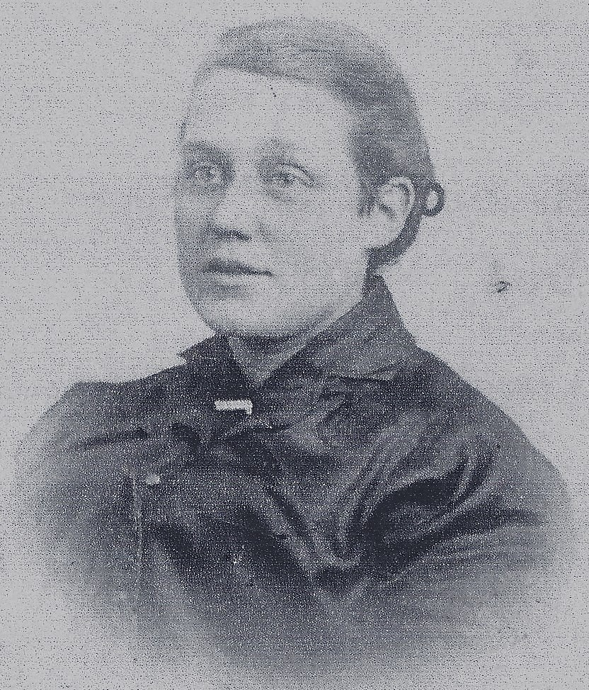
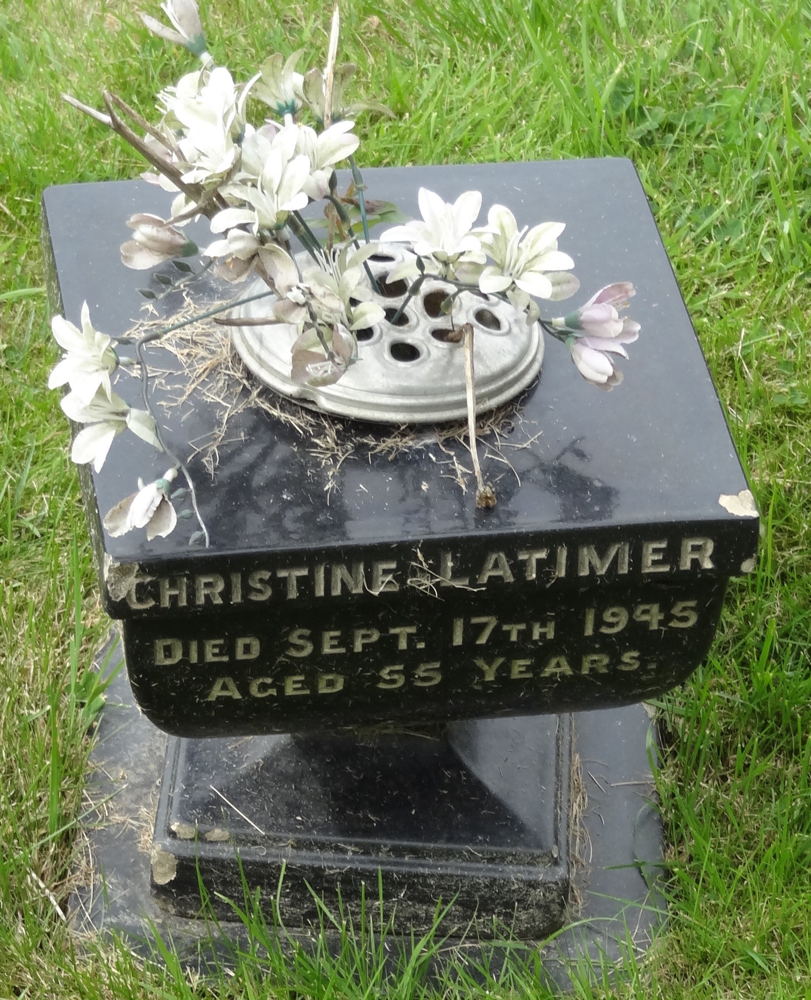
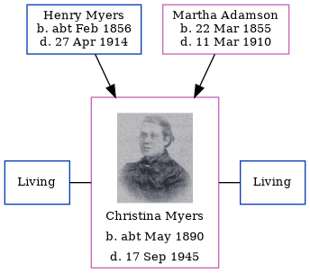

Christina Robertson Latimer (née Myers) cMay 1890 - 1945
[ Home ] | [ Calendar ] | [ Surnames Index ] | [ Family History ]The child of Henry Myers (a steamboat man) and Martha Adamson, Christina Myers was born in North Shields, Tyne and Wear, England <i>c.</i> May 1890<span class="citation">1,2,3,4,5,6</span>. She was married twice - to Peter Nimmo (in 1909) Robert Latimer (in 1918).</p><p>Throughout her life, she lived at Appleby Street in North Shields on Apr 5, 1891<span class="citation">1</span> and on Mar 31, 1901<span class="citation">2</span>. <p>She died on Sep 17, 1945 in North Shields<span class="citation">6</span> and was buried at Holy Cross Cemetery, Wallsend, Tyne and Wear, England after Sep 17, 1945.
Parents
- Henry Briscoe Nicholson was born c. Feb 1856
- Martha Sarah was born on Mar 22, 1855
Citations
- 1891 England, Wales & Scotland Census - Findmypast (was age 1 and the daughter of the head of the household)
- 1901 England, Wales & Scotland Census - Findmypast (was age 10 and the daughter of the head of the household)
- ngdom, England;
- ingdom, England;
- Volume: 10B; Page: 209; Line Number: 103; Record set: England & Wales Births 1837-2006; Subcategory: Civil Births; Category: Birth, Marriage & Death (Parish Registers); Collections from: United Kingdom, England;
- England & Wales deaths 1837-2007 - Findmypast
Media
Christina Robertson Myers

Christina Robertson Myers - gravestone

England & Wales births 1837-2006 - BMD/B/1890/2/AZ/000400/103
Family Trees - FMP/1311878309
England & Wales deaths 1837-2007 - BMD/D/1945/3/AZ/000484/072
Family Tree
Generated by Ged2Site. Last updated on Jul 20, 2025